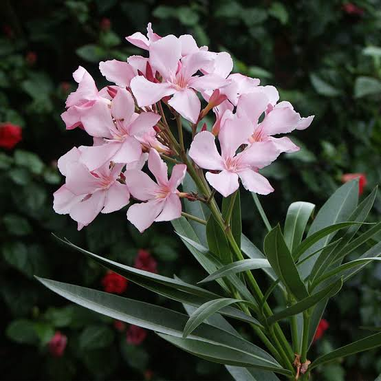
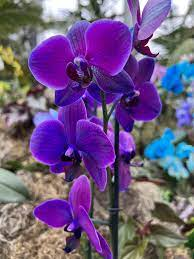

FLOWERS: Oleanders
October 2, 2023 by Candace Hendricks

Oleanders (Nerium oleander) are evergreen shrubs or small trees known for their lush,
lance-shaped leaves and vibrant, showy flowers. Native to a broad range of environments,
including the Mediterranean region and parts of Asia, oleanders have become popular ornamental
plants in various landscapes around the world. These hardy and drought-tolerant plants are prized
for their ability to thrive in diverse conditions, from coastal areas to arid landscapes.One of the
defining features of oleanders is their clusters of funnel-shaped flowers, which bloom in a spectrum of
colors, including shades of pink, white, red, and salmon. The flowers are often fragrant and attract
pollinators such as butterflies, making oleanders not only visually appealing but also beneficial to
local ecosystems.
Despite their aesthetic qualities, it's essential to note that oleanders contain toxic compounds known as
oleandrin and nerioside. All parts of the plant, including leaves, stems, and flowers, are poisonous if ingested,
posing a risk to humans and animals. Therefore, caution is advised when cultivating oleanders, especially in
areas accessible to pets and children.Oleanders have historical significance, with references dating back to
ancient times. They have been used in traditional medicine for various purposes, although their toxicity
requires careful handling. Today, oleanders remain a beloved choice in landscaping, providing a touch of color
and elegance while demanding minimal care in return
FLOWERS: Orchids
October 2, 2023 by Candace Hendricks

Orchids, a vast and diverse family of flowering plants, enchant with their extraordinary beauty and unique characteristics.
Renowned for their intricate and often exotic blooms, orchids are found on nearly every continent, thriving in a wide range of
environments, from tropical rainforests to arid deserts. With over 25,000 species and more than 100,000 hybrids, orchids represent
one of the largest and most varied plant families globally.The allure of orchids lies not only in their diverse shapes and colors
but also in their fascinating adaptations for pollination. Many orchids have evolved intricate mechanisms to attract specific
pollinators, often relying on mimicry to resemble insects or other animals. This intricate dance between orchids and their pollinators
showcases the complexity of nature's design.
Culturally, orchids have held symbolic significance throughout history. Revered in ancient civilizations like the Greeks, who associated
them with fertility and beauty, orchids continue to be cherished today for their elegance and grace. As ornamental plants, orchids have
become popular choices for homes and gardens, with enthusiasts cultivating them for their captivating flowers and the challenge of nurturing
their specific growing requirements.Despite their reputation for being delicate, orchids are resilient and adaptable, capable of thriving in a
variety of conditions when provided with the right care. From the classic Phalaenopsis to the exotic Vanda, orchids captivate enthusiasts with
their diversity, making them a symbol of both natural wonder and horticultural artistry.